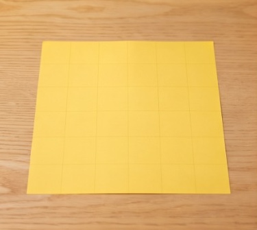
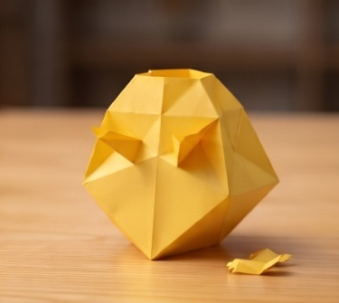
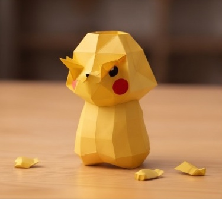
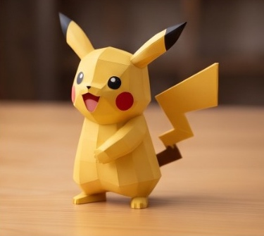
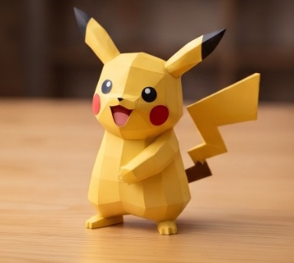
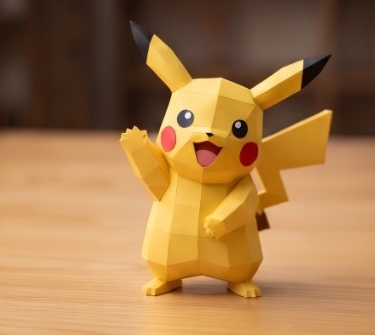

Step 1 / 6 · Flat Origami Sheet
✊ 0 Fingers (Rock)
Loading MediaPipe...
Mode: Video Animation
🙌 Zoom: 100%
Hide HUD

✊
Step 1
0 Fingers (Rock)

☝️
Step 2
1 Finger

✌️
Step 3
2 Fingers

🤟
Step 4
3 Fingers

🖖
Step 5
4 Fingers

🖐️
Step 6
5 Fingers (Paper)